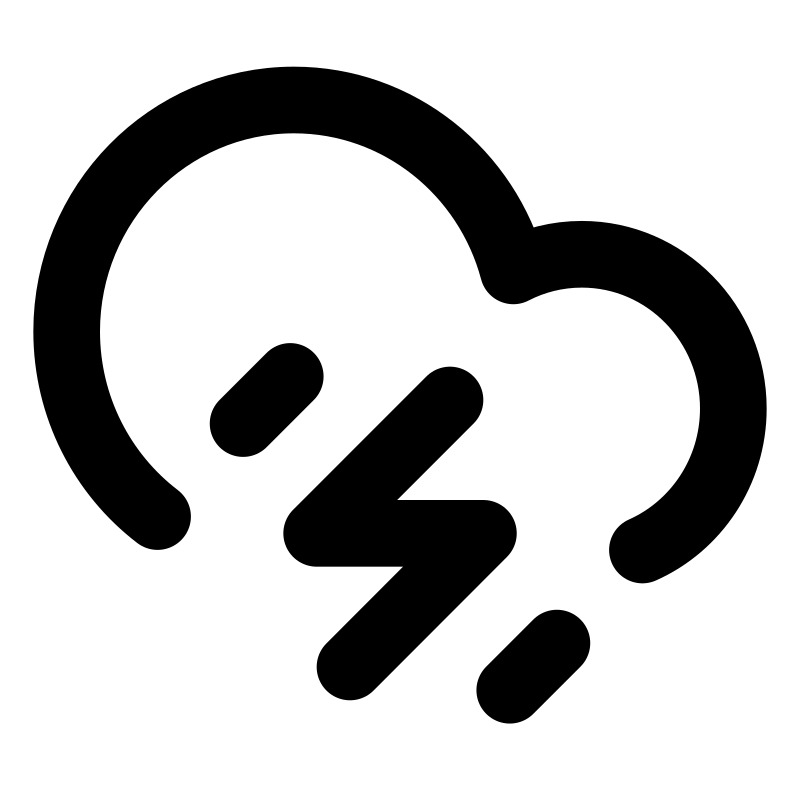

Váratlan áramszünet, leveri a biztosítékot, szikrázik a konnektor?
📞 Azonnali hívás
Gyorsszolgálatunkkal rövid időn belül a helyszínre érkezünk, és szakszerűen elhárítjuk a hibát.
Sürgős esetekben is megbízható, korrekt megoldást nyújtunk.
Cégünk gyors és megbízható megoldást kínál a felmerülő elektromos problémákra. Ha zárlat, biztosíték leoldás, konnektor vagy világítás meghibásodás jelentkezik, rövid határidővel állunk rendelkezésére. Célunk a gyors hibaelhárítás, korrekt árakon, felesleges várakozás nélkül.
Emellett vállaljuk - rövid határidővel - lakás teljes villamos hálózatának felújítását, kiépítését. Vagy akár egy adott vezetékszakasz cseréjét, bővítését is. Legyen szó új áramkörök kiépítéséről, vagy elektromos készülékek (pl. főzőlap, sütő) garanciális bekötéséről, számíthat ránk!

Túfeszültség védelem | Fi-relé beépítéseAz alábbi árak anyagköltség nélkül értendők, és tartalmazzák a kiérkezéstől számítottan 1 óra munka díját. Minden további megkezdett óra 10 000 Ft. Az anyagköltség a hiba jellegétől függ. Erről pontos tájékoztatást az előzetes telefonos egyeztetéskor, vagy a helyszíni szemle során tudunk adni.
✔ Gyors reakcióidő
✔ Megbízható, korrekt árak
✔ Tapasztalt villanyszerelő csapat
⏱️ Budapest területén 60-120 percen belül
🕗 a hét minden napján (hétvégén és ünnepnapokon is!) 8:00–20:00